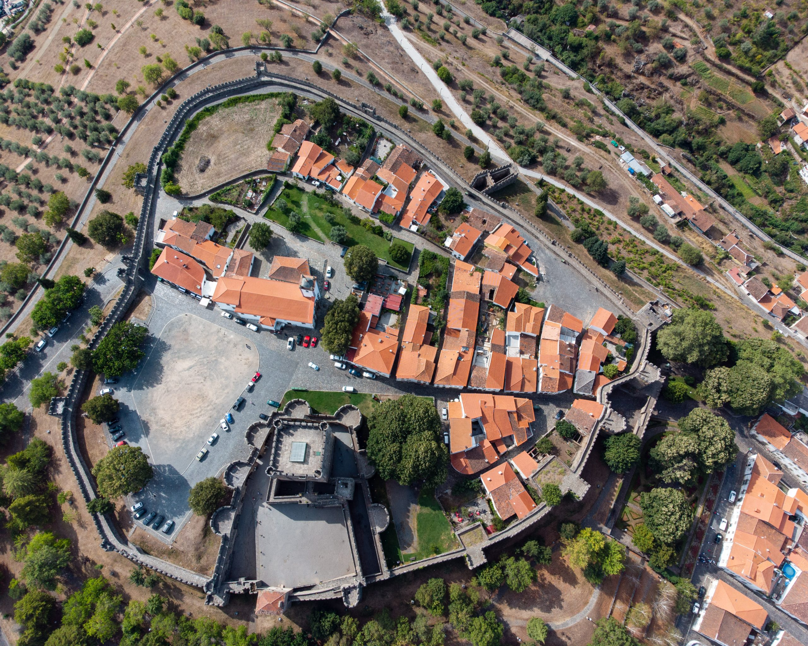

Pontos de Interesse
Explora os principais pontos turísticos da cidade.
Top 5 Restaurantes
- Solar Bragançano
- O Geadas
- Tasquinha da Sé
- Restaurante O Abel
- Casa Nostra
Top 5 Monumentos
- Castelo de Bragança
- Domus Municipalis
- Cidadela de Bragança
- Igreja de São Vicente
- Sé Velha de Bragança (Igreja de Santa Maria)
Locais a Não Perder
- Parque Natural de Montesinho
- Museu Militar de Bragança
- Centro de Arte Contemporânea Graça Morais
Melhor local para tirar uma foto
Melhor Mes para visitar
| Mês | Ranking |
|---|---|
| Jan | 1/10 |
| Fev | 2/10 |
| Mar | 2/10 |
| Abr | 3/10 |
| Mai | 4/10 |
| Jun | 9/10 |
| Jul | 9/10 |
| Ago | 8/10 |
| Set | 6/10 |
| Out | 5/10 |
| Nov | 8/10 |
| Dez | 10/10 |